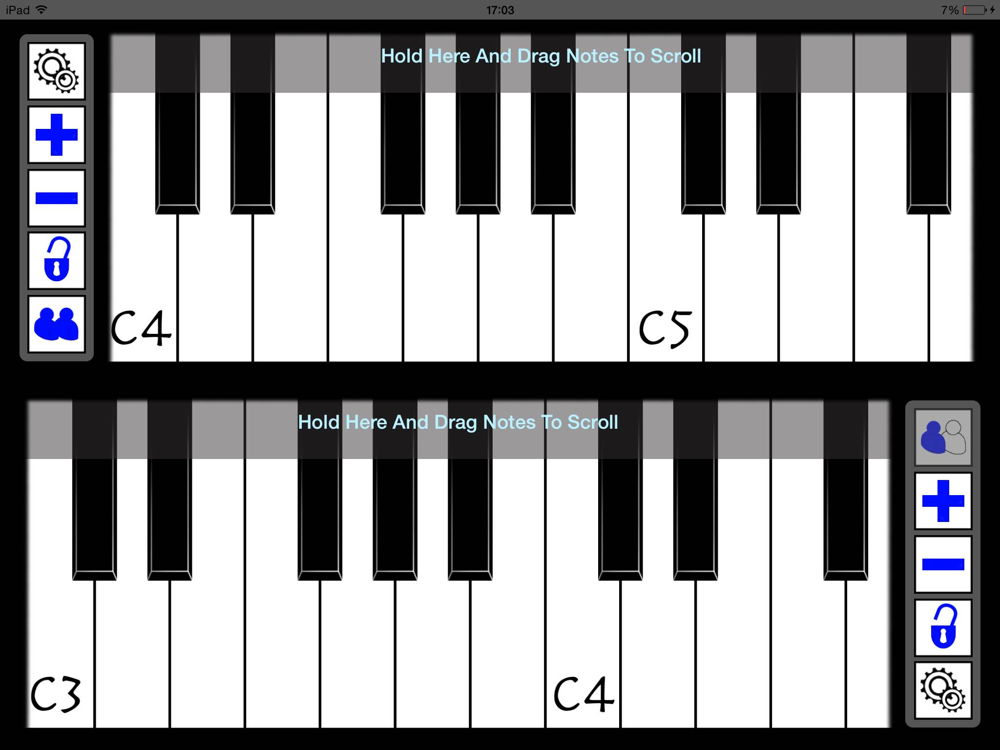
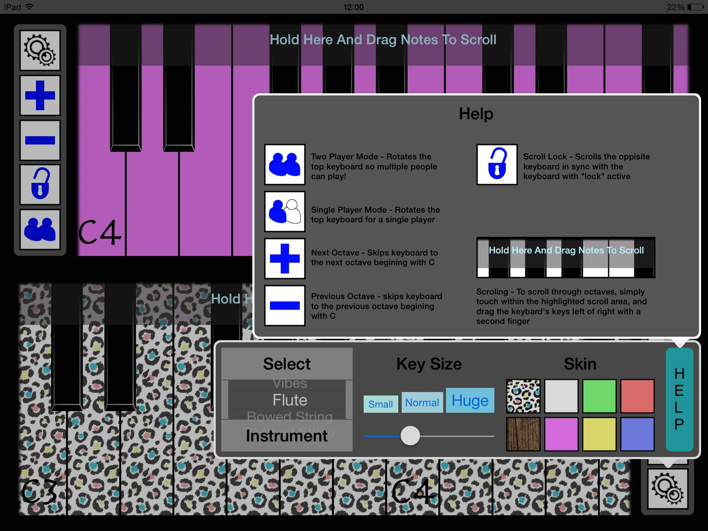
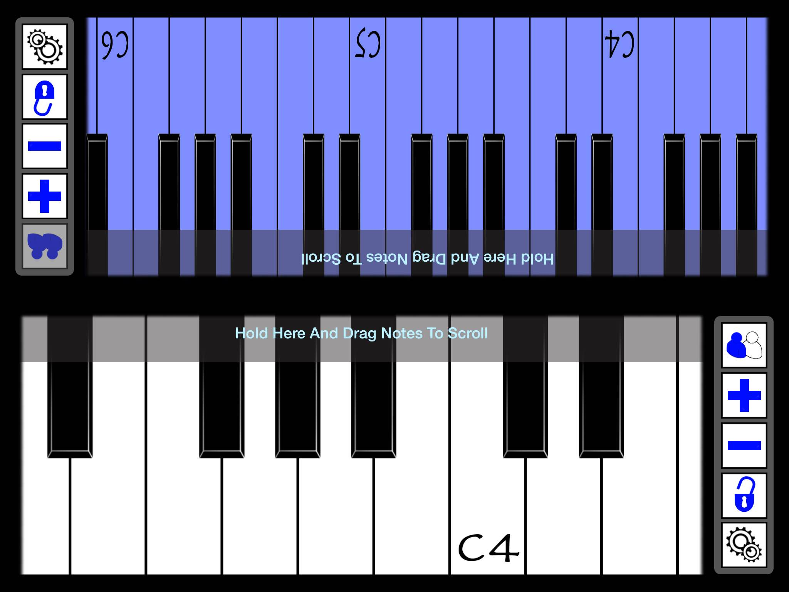

Additional Files
|
|

Dual Play is a revolutionary new sound synthesis app that brings back what matters most about music - your own style! With unique features and great customisation options, there may be no such thing as a free lunch, but you can certainly put on a free show! Play on your own, or play with friends in our hassle free two-player mode, the only thing that counts is that you're having fun.
  
Whilst still providing all the functionality you might expect from a typical keyboard based application, Dual Play offers you more choice and flexability. Customize the look and feel of each keyboard seperately with an advanced options menu and find the sound that suits you.
Future Updates:
- The more the merrier (1) - Loads of new skins coming your way soon, along with the option to import your own straight from camera roll!
- The more the merrier (2) - Instruments, instuments, and more instruments... Whether you play the guitar, or mongolian nose whistle, we're on it.
- Time to learn - Basic lessons and song tutorials are on their way, to help everyone get off to a great start.
- Audio Glitches - Were aware that some of out synthesizers arent quite up to scratch when it comes to playing alot of notes, so it's getting fixed.
- Lets get personal - You'll all have hopefully spotted that you can change the volume of a note by touching higher / lower on the key, but soon youll be able to change much more, and personalise the setting too.